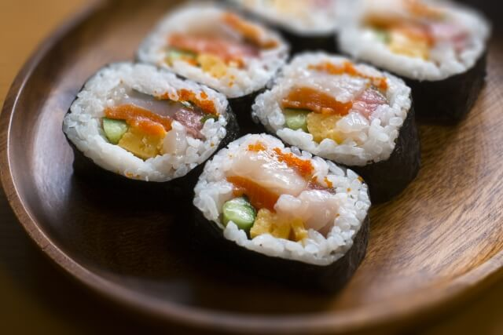

Maki
Japanese sushi roll made by wrapping vinegared rice and various fillings, such as fish and vegetables, in a sheet of seaweed called nori, then slicing it into bite-sized pieces.
60 min
Namiko Hirasawa Chen
Step-by-Step Guide: Maki
- Prepare the Sushi Rice: Cook 2¼ cups short-grain rice with 2¼ cups water and 1 piece kombu. Mix with ⅓ cup rice vinegar, 3 tbsp sugar, and 1½ tsp salt. Keep covered with a damp cloth.
- Soak the Shiitake Mushrooms: Soak 8 dried shiitake mushrooms in 1 cup water for 15 minutes. Keep submerged with a small bowl.
- Prepare the Kanpyo: Rinse 0.4 oz dried kanpyo, rub with 1 tsp salt, boil for 3 minutes, then cool in ice water and squeeze dry.
- Prepare Shiitake Stock: Remove mushroom stems, strain the soaking liquid, and reserve 1 cup for cooking.
- Cook Shiitake and Kanpyo: Combine mushrooms, kanpyo, and reserved stock. Add 1 tbsp sugar, 1 tbsp mirin, and 1 tbsp soy sauce. Simmer 20–30 minutes until liquid reduces. Slice mushrooms and cut kanpyo into long strips.
- Make the Tamagoyaki: Cook 1 Japanese rolled omelette and slice into long strips.
- Prepare the Unagi: Broil 1 eel fillet for 5–7 minutes on a foil-lined, oiled tray. Cut into 4 long strips.
- Prepare Mitsuba or Spinach: Tie stems, blanch in salted boiling water, shock in ice water, then squeeze dry.
- Prepare the Cucumber: Slice 1 cucumber into quarters lengthwise and remove seeds.
- Prepare the Sakura Denbu: Open the 40 g package and set aside.
- Assemble the Futomaki: Make tezu (¼ cup water + 2 tsp vinegar). Place a nori sheet on a bamboo mat and spread rice, leaving a ½-inch strip at the top.
- Add the Fillings: Add cucumber at the bottom, then Sakura Denbu and shiitake near the top. Add tamagoyaki, unagi, and greens.
- Roll the Futomaki: Roll from the bottom using the bamboo mat to tighten. Pull the mat to firm the roll, remove it, and press gently. Repeat for remaining rolls.
- Cut and Serve: Cut each roll in half, wiping the knife between cuts, then cut each half into 3 pieces. Serve with sushi ginger.